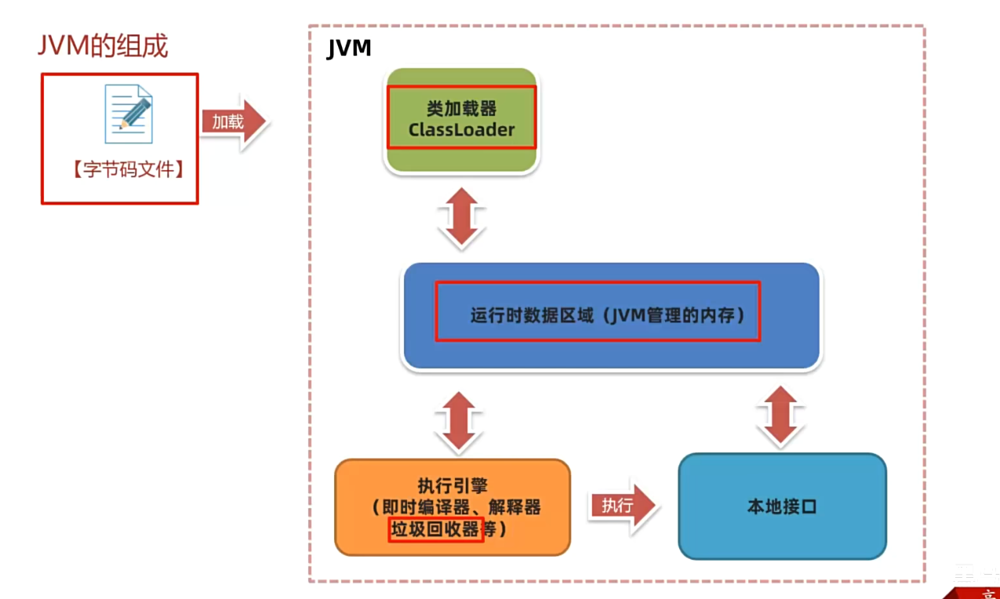
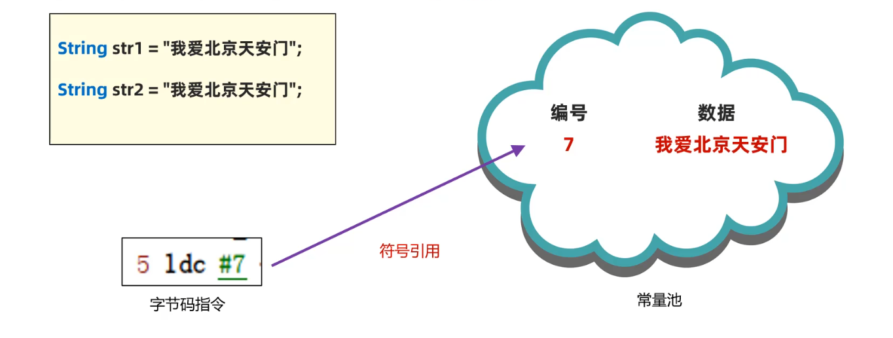

2-字节码文件详解
字节码文件详解
JVM 组成
首先有一份字节码文件
JVM组成部分
类加载器：记载class字节码文件到内存
运行时数据区域：JVM管理的内存
执行引擎：JIT，垃圾回收，解释器
本地接口：虚拟机底层用 cpp 编写，需要调用这些方法（native）接口

字节码文件的组成
如何打开
没办法用记事本等打开，因为二进制存储
最好使用 jclasslib
五部分内容
基础信息：魔数，字节码文件对应的Java版本号，访问标识，父类和接口
常量池：保存了字符串常量，类或者接口名，字段名主要在字节码文件使用
字段：当前类或者接口声明的字段信息
方法：当前类或者接口声明的方法信息字节码指令（编译器完成）
属性：类的属性，比如源码的文件名，内部类的列表等
基础信息
魔数（magic）：一般文件是用文件头标识类型，而不是通过扩展名。这个魔数就是文件头
cafebabe主副版本号：主版本号用来标识大版本号，减去44就是JDK。比如52就是JDK8。副版本号一般不关心。主要用于判断当前字节码版本和运行时JDK版本是否兼容。
访问标识：标识是类还是接口，注解，枚举，模块；标识权限比如 public，final ，abstract
类，父类，接口索引：通过这些可以找到类，父类，接口信息
常量池
作用：避免相同的内容重复定义，节省空间。
这里常量池既有字符串常量，也有字面量常量。因为同一个String既有可能用于变量名，也有可能就是一个String
常量池每个数据有编号，编号从1开始，在字段或者字节码指令可以用编号快速找到数据。通过编号引用到常量池的过程叫做符号引用。

方法
局部变量表（下标为0的是参数args），按顺序放局部变量
有操作数栈
1 | int i=0; |
字节码的常用工具
javap -v
javap是JDK自带的反编译工具，可以查看字节码的内容，适合在服务器查看字节码内容
如果是 jar 包
需要先解压
1 | jar -xvf user-service.jar |
可以 > 重定向生成一个 txt 文件
1 | javap -v xxx.class > /... |
jclasslib 插件
IDEA插件
阿里 arthas
线上监控
dump命令导出字节码，-D 指定路径
jad 类的全限定名，反编译得到类的源码